Clinical Approach to Mechanical Back & Neck Pain
- Mechanical spine pain = axial pain that is worse with movement and better with rest, with no red flags. It is usually benign, and it usually doesn't need imaging: no red flags and under 6 weeks means no imaging.
- Red flags change everything. They fall into six groups: neurologic (progressive deficit, saddle anaesthesia, incontinence), inflammatory (morning stiffness, night pain, better with exercise), neoplastic (night pain, weight loss, cancer history), infectious (fever, IV drug use, immunosuppression), fracture (trauma, osteoporosis) and vascular.
- Disc vs facet. Discogenic pain is back > leg and worse with flexion (the disc is squeezed). Facetogenic pain is localized, maybe one-sided, worse with extension and relieved by flexion, and rarely radiates past the knee. Both are treated the same way: physio is the mainstay, with NSAIDs acutely and acetaminophen.
- Anatomy: the ALL resists hyperextension and the PLL hyperflexion. Skull on C1 says “yes” and C1 on C2 says “no”. The vertebral artery climbs through the transverse foramina of C6–C1. The deep back muscles are the dorsal rami's only motor targets, and trapezius is CN XI.
- Muscle pain and whiplash: reassure, keep moving, avoid collars, and use only “modest” physio early. Fewer than 5% of whiplash patients have severe symptoms at 2 years. The bridge: spondylosis → spondylolisthesis → stenosis, which is where non-mechanical pain begins (7.3).
Learning Objectives
The objectives are shared with 7.3, 7.5, the anatomy lab and Clinical Skills. Each module covers part of them.
- Functional anatomy of the neck and back: the distinguishing features of vertebrae at different levels and why they differ; the innervation and function of the neck and back muscles and their role in causing or preventing back pain; how ligaments and discs keep the spine stable; dermatomes and myotomes, with the root deficits at C5–C8 and L3–S1.
- Axial pain: red flags and what they suggest; the anatomical basis of common spine disorders; recognizing myofascial pain, SI joint pathology, mechanical back pain, spinal stenosis, cauda equina, radiculopathy and cervical myelopathy from the history and exam.
- Inflammatory vs non-inflammatory back pain; spondylosis vs spondylolysis vs spondylolisthesis.
- Normal spinal anatomy and common anomalies on plain x-ray (fracture, spondylolysis, scoliosis).
- Management, including investigations and treatment, of these common painful spinal conditions.
Dr. Caitlin Cassidy (clinical) and Dr. Charys Martin (anatomy). Seven recordings, about 75 minutes, in two halves, each an anatomy break followed by the clinical side. This page follows that order. The module offers a “detailed” version of the slides that adds every muscle's origin and insertion. Dr. Martin: you only need origins and insertions where they're printed on the slide, and greyed-out boxes are nice-to-know.
Why It Matters, and How to Sort It Out
Back and neck pain are among the most common complaints in primary care. A specific anatomical diagnosis is often hard to make, and in uncomplicated (“mechanical”) back pain it often doesn't change treatment. What you can't miss is the patient whose pain is not uncomplicated.
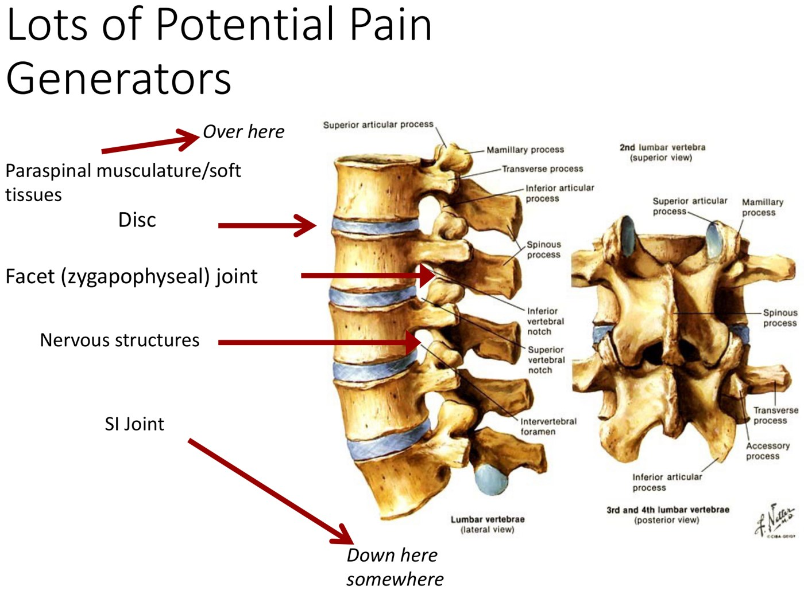
Start with the history: OLDCARS (onset, location, duration, character, alleviating and aggravating factors, radiation, severity), plus red flags.
| Red flag group | Ask and look for |
|---|---|
| Neurologic | Progressive weakness or sensory change, saddle anaesthesia, loss of hand dexterity, ataxic gait, incontinence, erectile dysfunction, abnormal reflexes |
| Inflammatory | Morning stiffness, pain in the second half of the night, family history, rashes, eye symptoms, pain that improves with exercise (the opposite of mechanical pain) |
| Neoplastic | Young age, severe night pain or no relief with rest, unintentional weight loss, night sweats, history of cancer, associated signs (e.g. hematuria). The cancer may be in a nearby organ and only presenting as back pain. |
| Infectious | Fevers, sweats, IV drug use, immunosuppression |
| Fracture (subacute or chronic) | A fall or trauma, osteoporosis, a previous fragility fracture |
| Vascular | Neck: vertebral artery insufficiency, with dizziness on neck movement, cranial nerve signs or drop attacks. Limbs: distal claudication, pain in the extremities with activity, with or without back or neck pain. |
Then examine for axial abnormalities and contributing limb problems, neurologic abnormalities, and signs of the red-flag conditions. For example, if a young patient has night pain and morning stiffness, look for the rash that supports an inflammatory cause. The exam itself is taught in Clinical Skills.
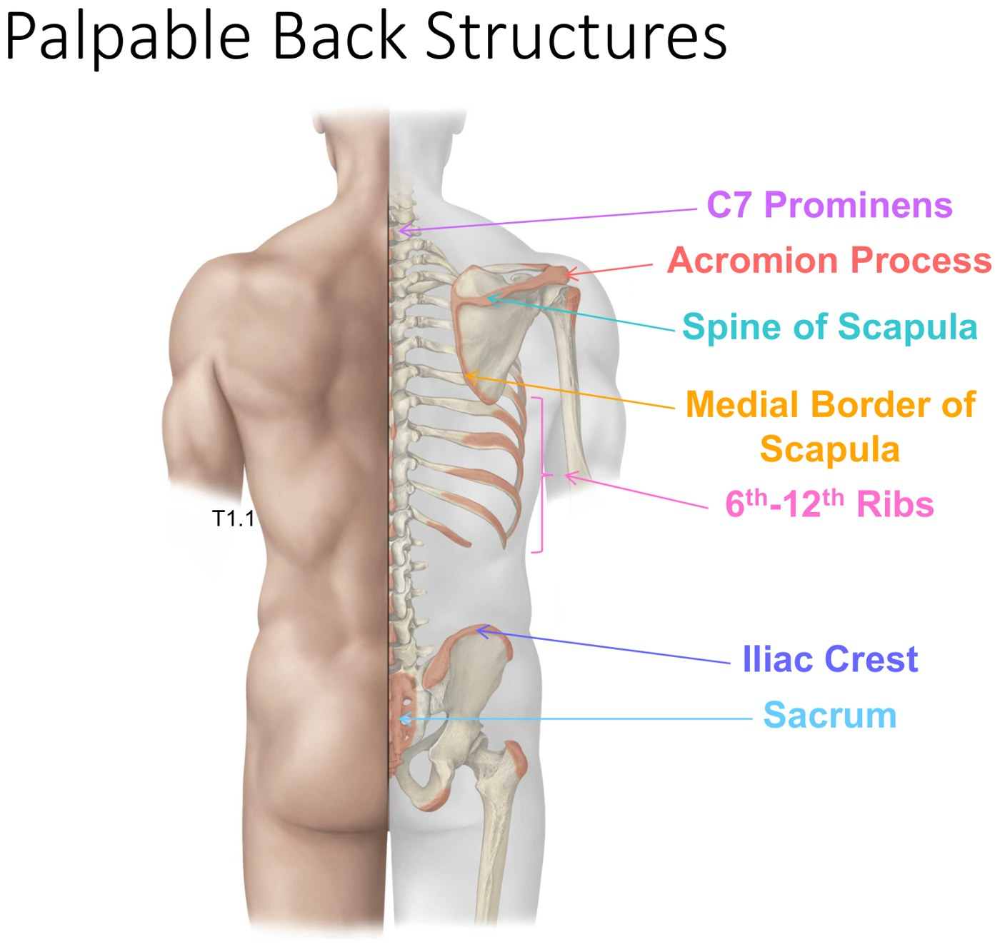
Investigations
| Test | Good for |
|---|---|
| X-ray ($) | A quick screen of alignment and fractures. Says little about soft tissue or nerves. |
| CT ($$) | Bony detail, trauma. Not much help for nerves or canal patency. |
| MRI ($$$) | The best view of non-bony structures, but the most expensive with the longest waits |
| Bone scan | Multifocal disease; hot vs cold lesions (e.g. neoplasm) |
| CT myelogram | Only if MRI is contraindicated: an invasive study with dye injected into the thecal sac |
| Image-guided injection | Diagnostic clarity (did injecting that joint relieve it?) plus possible therapeutic benefit |
| With red flags, also… | Infection: bloodwork and cultures. Neoplasm: abdominal or other imaging and bloodwork. Vascular: angiography. Neurologic: EMG (a functional nerve test). |
Most low back pain doesn't need imaging. Imaging often can't show the pathology (soft tissue), can't tell symptomatic from incidental findings, and often doesn't change management. It is required to look for bad things, so red flags trigger whatever workup fits. With uncomplicated mechanical pain under 6 weeks that is responding to conservative care, hold off.
What Mechanical Spine Pain Looks Like
By definition, axial pain that is worse with movement. “Worse with movement” is the defining feature, and the opposite of inflammatory back pain, which improves with movement.
| OLDCARS | Mechanical pattern |
|---|---|
| Onset | Anywhere from acute to chronic. Usually changes that have accumulated over time (degenerative), often “tweaked” by something acute, like bending wrong or going down stairs, on a background that has been grumbling for a while. |
| Location | Midline or just beside the midline of the neck or back |
| Duration | Variable |
| Character | Dull and aching, or sharp and stabbing |
| Aggravating / alleviating | Aggravated by movement, relieved by rest |
| Radiation | Variable, but it usually doesn't reach the tips of the limbs, as nerve pain would |
| Severity | Variable |
| Red flags | None |
From the module's knowledge checks
A 28-year-old construction worker has had left > right low back pain for 4 weeks since lifting something heavy. It's worst at night, and he's had a low-grade fever for a few days. → Arrange imaging. Young age, fever and night-dominant pain are red flags, so this is not a case for reassurance or physio.
A 72-year-old with 5 weeks of severe mechanical pain, no red flags, who hasn't tried anything yet. → Physical therapy, the mainstay. A facet injection comes only after therapy fails, codeine and other opioids are to be avoided (and he hasn't even tried acetaminophen), and surgery is for axial pain with neurologic features. Surgery for purely axial mechanical pain has poor outcomes.
Bones, Joints & Ligaments
Dr. Martin's anatomy break, then Dr. Cassidy on the disc and the facet.
The Vertebral Column
It runs from the base of the skull to the coccyx. It protects the spinal cord and nerves, bears and transmits body weight, absorbs shock, maintains posture, and gives a mobile framework. Small movements at each level add up to large ones overall: flexion, extension, lateral flexion and rotation.
| Region | Vertebrae | Curve |
|---|---|---|
| Cervical | 7 (C1–C7) | Secondary, concave posteriorly (lordosis) |
| Thoracic | 12 (T1–T12) | Primary, concave anteriorly (kyphosis) |
| Lumbar | 5 (L1–L5) | Secondary, concave posteriorly (lordosis) |
| Sacrum | 5, fused | Primary, concave anteriorly |
| Coccyx | 4, fused | — |
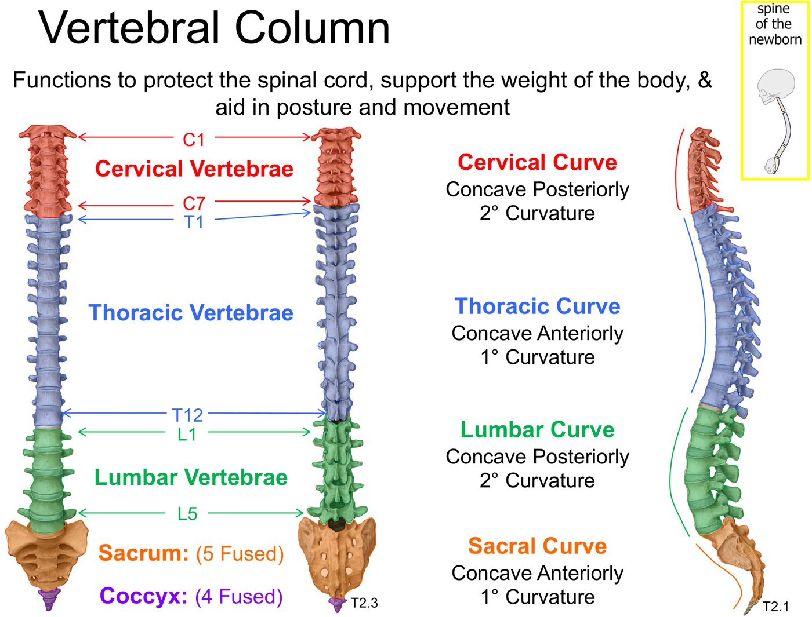
| Abnormal curve | What it is | Usual causes |
|---|---|---|
| Kyphosis | An exaggerated thoracic curve | Erosion or fracture of the anterior vertebrae, which wedge the bodies forward: osteoporosis and aging |
| Lordosis | An exaggerated lumbar curve with an anterior pelvic tilt | Weak trunk (abdominal) muscles; pregnancy |
| Scoliosis | Increased lateral curvature with rotation of the vertebrae | Weak back muscles, poor posture, congenital defects, unequal leg length. Through the kinetic chain, the rotation passes down to the pelvis and lower limbs. |
Anatomy of a Vertebra and Its Joints
| Part | Description |
|---|---|
| Body | The large anterior part that carries weight, getting bigger going down |
| Vertebral arch | Pedicles, short stout processes joining the arch to the body, plus laminae, flat plates closing the arch behind |
| Transverse processes | Project posterolaterally from where pedicle meets lamina; muscle and ligament attachments |
| Spinous process | Projects posteriorly where the laminae meet; muscle and ligament attachments |
| Articular processes | Four, two superior and two inferior, that form the zygapophysial (facet) joints with the vertebrae above and below |
| Vertebral foramen | Body plus arch: the opening for the spinal cord |
| Intervertebral foramen | The inferior vertebral notch of the vertebra above plus the superior notch of the one below: the exit for the spinal nerve |
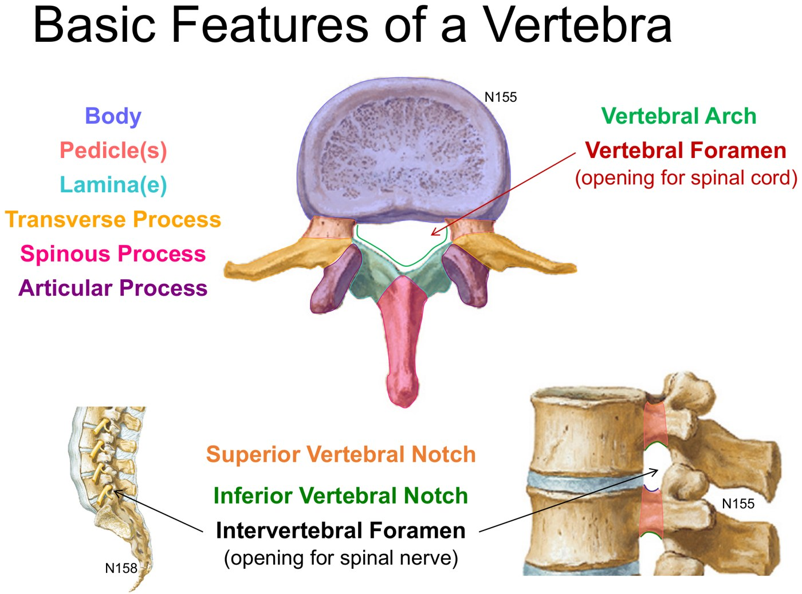
The parts of a vertebra. The two notches stack into the intervertebral foramen, the spinal nerve's exit. Slide from the deck (Netter).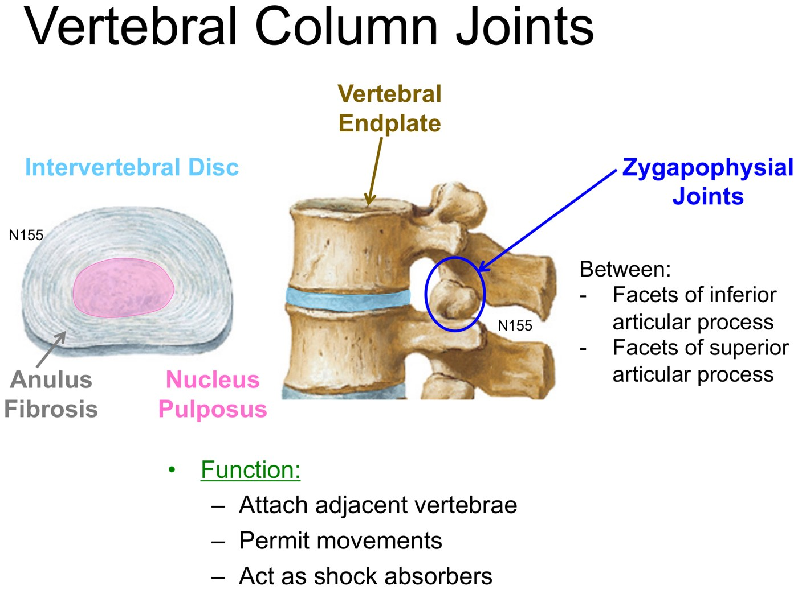
Two connections at every level: the disc in front and the paired facet joints behind. Slide from the deck.| Joint | Key facts |
|---|---|
| Intervertebral disc | Anulus fibrosus (outer concentric rings of fibrocartilage) around the nucleus pulposus (gelatinous, high water content). It meets the body at the vertebral endplate, a cartilage layer fused to the disc over a thin layer of porous bone. It attaches the vertebrae, permits movement and absorbs shock. Discs are thickest in the cervical and lumbar regions and make up about 25% of column height. There is no disc between C1 and C2. |
| Zygapophysial (facet) joints | Plane synovial joints between the inferior articular facets of the vertebra above and the superior facets of the one below. They glide and hold the column together at the back. |
| Atlanto-occipital (skull on C1) | Flexion and extension: nodding “yes” |
| Atlanto-axial (C1 on C2) | C1 pivots around the dens: shaking “no” |
| Costovertebral | The rib's head meets the costal facets of its own vertebra, the vertebra above, and the disc between them. Its tubercle meets the transverse process of its own vertebra (costotransverse joint). |
Regional Differences
| Feature | Cervical | Thoracic | Lumbar |
|---|---|---|---|
| Body | Small | Heart-shaped, with costal facets | Large, with heavy pedicles |
| Vertebral foramen | Large (the cervical enlargement supplies the arms) | Small, circular | Large, triangular |
| Transverse processes | Short, with transverse foramina | Long, with facets for the rib tubercles | No costal facets |
| Spinous processes | Short and bifid, except C7 (vertebra prominens) | Long, sloping down over the next vertebra | Short, stout, broad |
| Movement | Free: flexion, extension, lateral flexion, rotation | Some flexion, little extension (the sloping spines block it), rotation, some lateral flexion | Flexion, extension, some lateral bending, limited rotation |
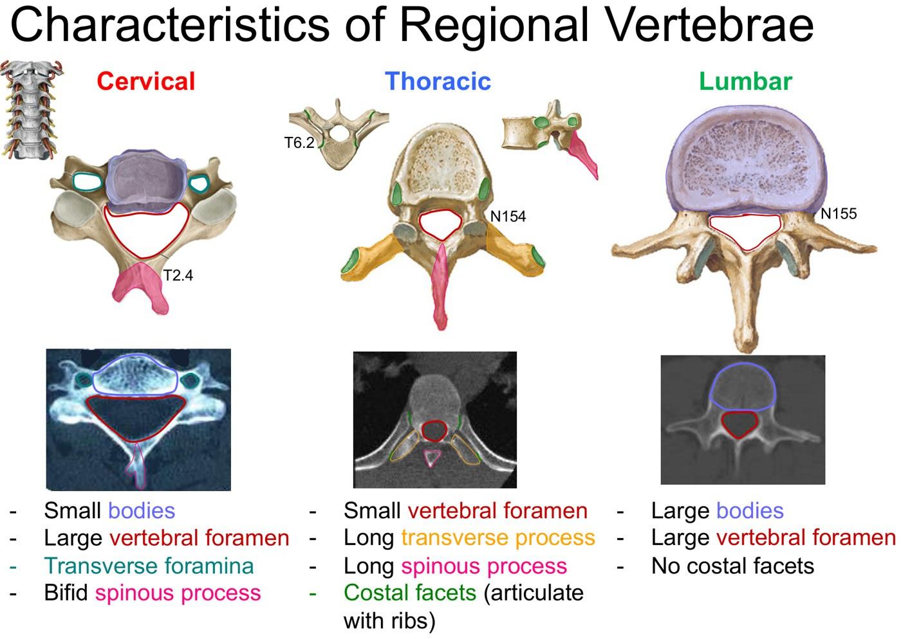
Every cervical vertebra has transverse foramina, but the vertebral artery only runs through C6 to C1 on its way to the brain, protected inside bone the whole way. C7's foramina carry only the vertebral vein. C7 is also the odd one out for its long, single (not bifid) spinous process: flex your neck and it's the bump at the bottom.
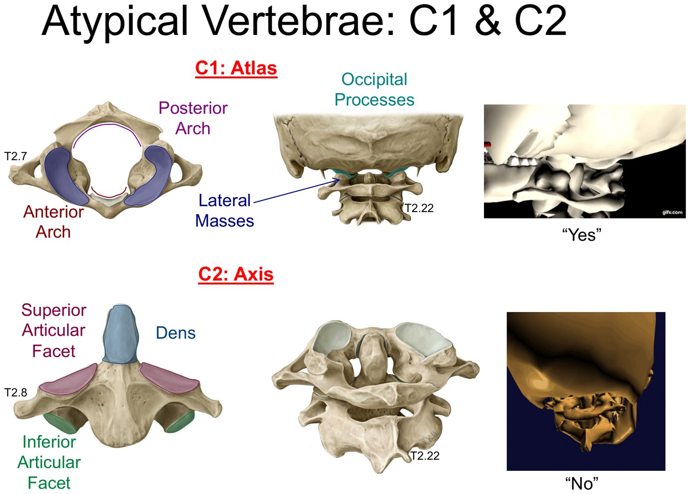
Note: the recording calls the lumbar transverse processes “short and wide”. The module's own mini-text calls them “long and slender”, and the table follows the mini-text, which matches standard anatomy texts. Everyone agrees the lumbar spinous processes are short and broad.
The Ligaments
| Ligament | Where | Job |
|---|---|---|
| Anterior longitudinal (ALL) | Strong, broad band down the front of the bodies and discs, occiput to sacrum | Resists hyperextension |
| Posterior longitudinal (PLL) | Narrow, inside the canal on the back of the bodies and discs | Resists hyperflexion |
| Ligamentum flavum | Pale yellow tissue joining lamina to lamina | Seen from inside the canal at laminectomy |
| Supraspinous | Tips of the spinous processes, C7 to the sacrum. The most posterior ligament. | |
| Ligamentum nuchae | Continues the supraspinous ligament above C7, from the external occipital protuberance, and fills the cervical curve | Attachment for the neck and upper back muscles |
| Interspinous, intertransverse | Between neighbouring spinous processes, and between transverse processes |
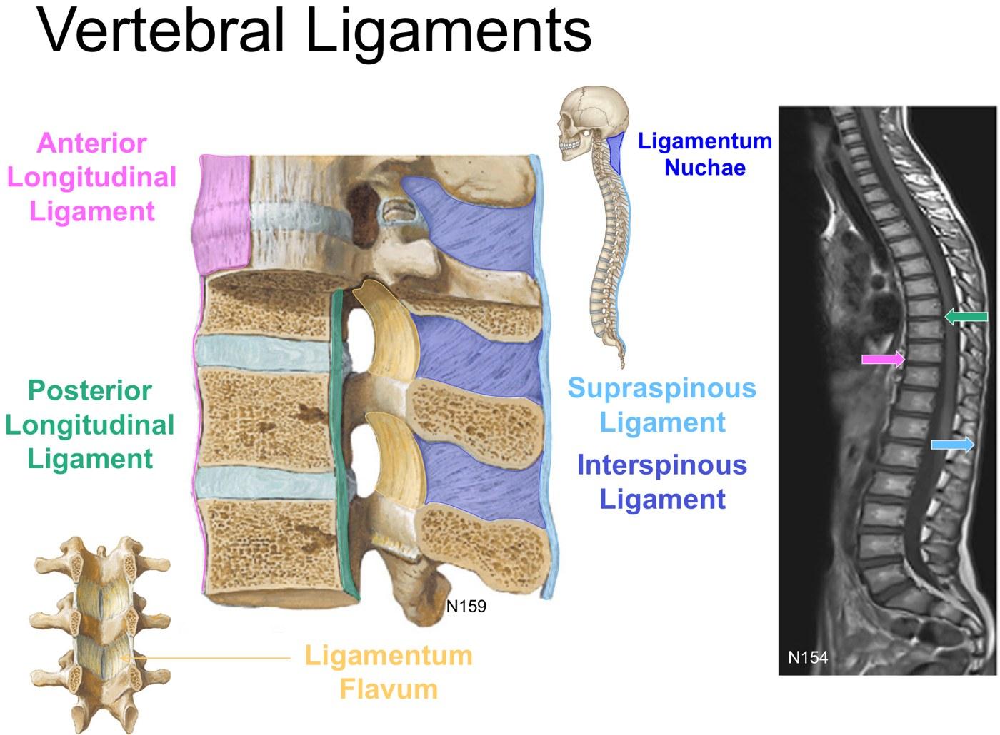
Cutting through the laminae on both sides lets the surgeon lift off the spinous processes and see into the canal (the ligamentum flavum is on the inside). It is done to relieve pressure on the cord or roots from a tumour, a herniated disc or bony overgrowth.
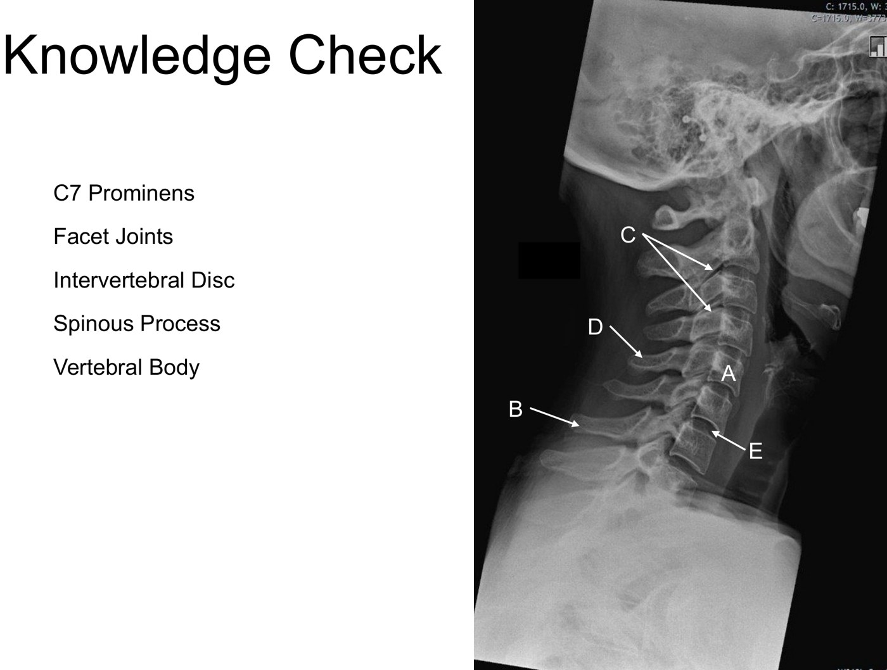
Lateral C-spine, with the answers from the feedback video. A vertebral body (C5), B C7 prominens (the long spinous process at the bottom), C facet joints, D spinous process (C5), E intervertebral disc. Count down from C1 to find your level. Slide from the deck.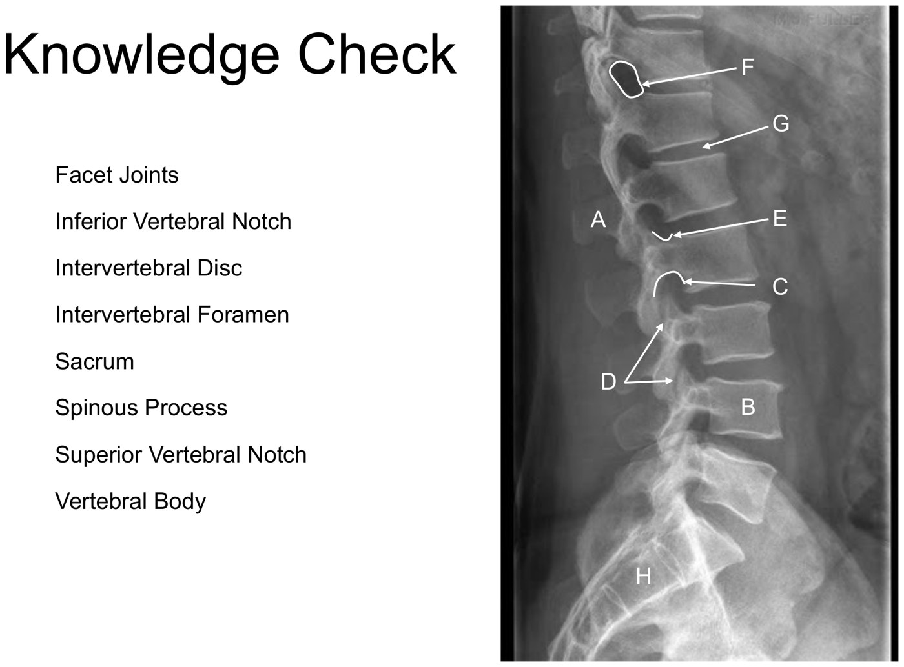
Lateral L-spine. A spinous process, B vertebral body, D facet joints (these overlap more than in the neck because lumbar facets face medially and laterally), F intervertebral foramen, G disc space, H sacrum (L5 sits on the sacral promontory). C and E are the vertebral notches: E, the cup open upward, is the superior notch, and C, open downward, is the inferior notch. The recording names both without assigning the letters, so that pairing comes from the shapes. Slide from the deck.Degenerative Spine Disease
![Slide showing the degenerative cascade as a vertical list of arrows: repetitive axial loading, damage to vertebral end plates, microtears in the annulus fibrosus, internal herniation of the nucleus pulposus, loss of disc height; then change in angles and repetitive microtrauma, synovial hypertrophy, cartilage destruction, osteophyte formation, capsular laxity with or without subluxation, and enlargement of the articular processes; beside it a sagittal drawing of L4 to S1 discs and an image of a degenerated cervical spine.](../../../../assets/images/week-7/mechanical-back-neck-pain/degenerative-cascade.jpg)
| Term | Meaning |
|---|---|
| Spondylosis | “Spondy” = vertebra, “-osis” = a state of disease. The whole degenerative picture: degenerative disc disease plus facet arthropathy, with periarticular changes (loss of disc height, ligament hypertrophy). In short, arthritis of the spine, made more complicated than other joints by the discs. |
| Spondylolisthesis | “Listhesis” = slipping: one vertebra slips on the next, usually forward (see the bridge, below) |
Discogenic Pain and Disc Herniation
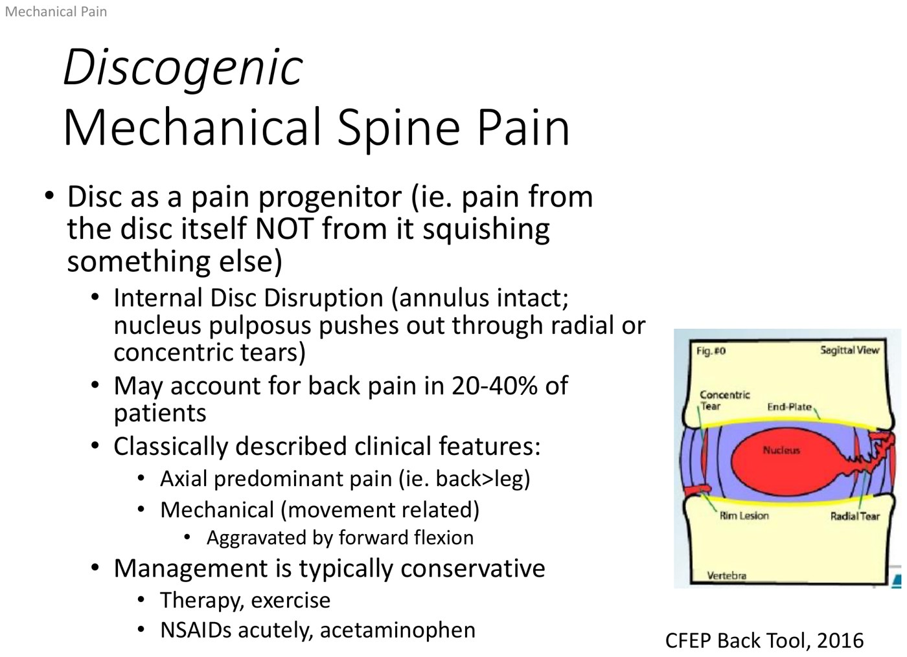
The disc itself hurts, rather than pressing on something else. Slide from the deck (CFEP Back Tool, 2016).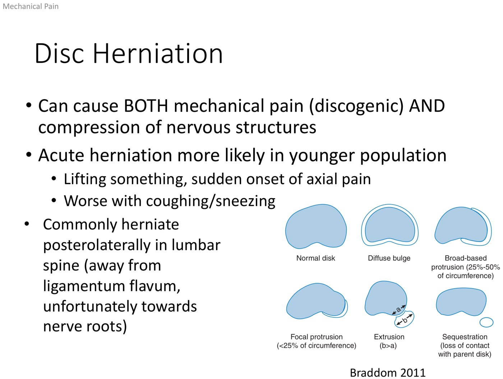
From bulge to sequestration. A diffuse bulge, a broad-based protrusion (25–50% of the circumference), a focal protrusion (< 25%), an extrusion (the bulge is wider than its neck, b > a), and a sequestration, where a fragment has lost contact with its parent disc. Slide from the deck (Braddom 2011).| Discogenic pain (internal disc disruption) | Acute disc herniation | |
|---|---|---|
| What's happening | The anulus is intact; the nucleus pushes out through radial or concentric tears and irritates the disc itself | Disc material herniates out, causing both discogenic pain and possibly compression of nerves |
| Who | 20–40% of back pain patients | Younger people (40s–50s), often while lifting something |
| Pattern | Axial-predominant (back > leg), mechanical, worse with forward flexion, which squeezes the disc between the bodies | Sudden axial pain, worse with coughing or sneezing (the Valsalva effect raises disc pressure), ± leg pain if a root is compressed |
| Treatment | Conservative: therapy and exercise, NSAIDs acutely, acetaminophen | The same for the mechanical part. The nerve side is in 7.3. |
The PLL is strong down the midline at the back of the disc, so herniations usually squeeze out to the side of it. That is good for the cord, which stays clear of the central canal, but bad for the nerve roots, which leave laterally. That's why herniations cause radiculopathy. (The slide says the disc moves away from the “ligamentum flavum”, but that ligament joins the laminae. The recording's PLL explanation is the anatomically correct one and is the one used here.)
Facetogenic Pain
The facets are synovial joints, so they get arthritis like any other. But facet degeneration on imaging doesn't track with symptoms (almost every adult's x-ray, CT or MRI shows some), which is why imaging helps so little here.
| Feature | Facetogenic pain |
|---|---|
| Where | Localized axial pain, often off to one side, ± some radiation, but not to the fingers or toes |
| Neck | Commonly headache, or shoulder and neck pain |
| Low back | Buttock, hip, thigh or low back pain; it is uncommon to go past the knee |
| Mechanics | Classically worse with extension, relieved by flexion, because extension jams the facets together and flexion opens them |
| Treatment | Flexion-based therapy; NSAIDs acutely; acetaminophen; image-guided facet injection, medial branch block or ablation |
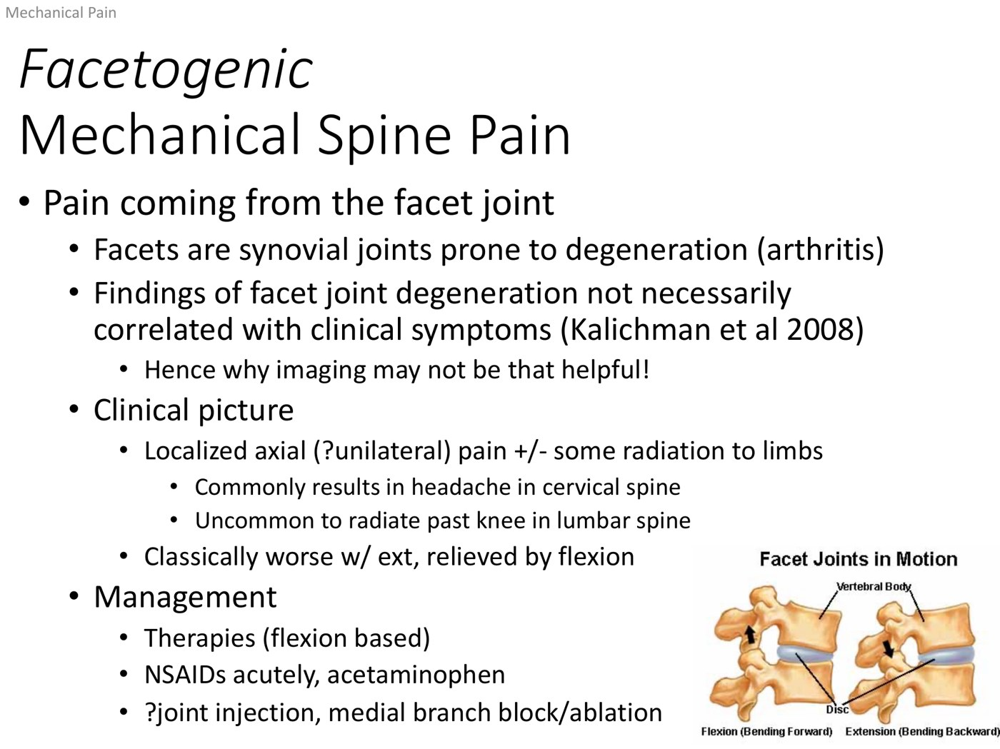
Facet joints in motion (inset): bending forward opens the facets and bending back compresses them, which is why extension hurts. Slide from the deck.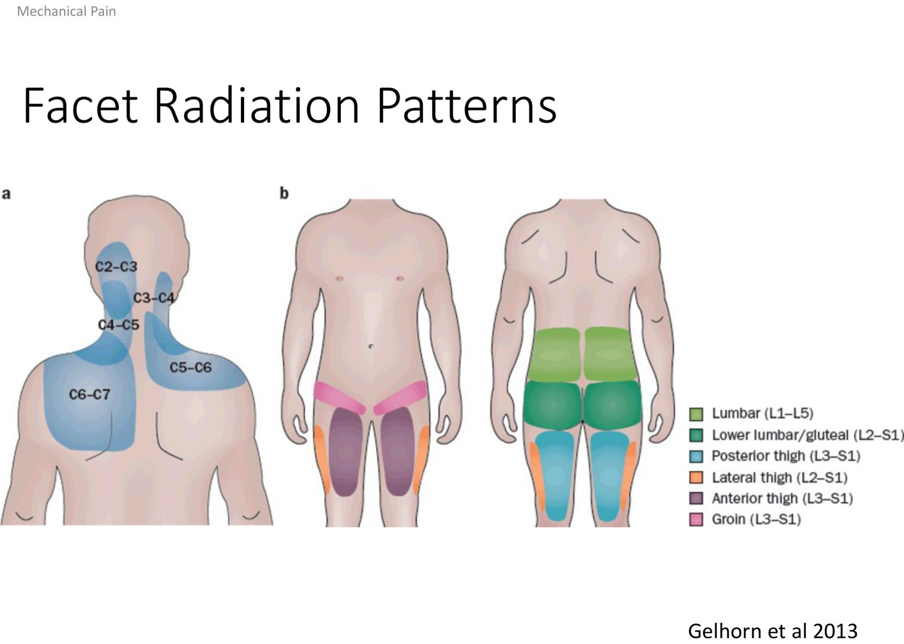
Where facets refer pain. The upper cervical facets go to the head, the lower ones to the neck and shoulder. The lumbar facets go to the low back, buttock, groin and thigh. Dr. Cassidy warns that these maps vary between sources. Slide from the deck (Gellhorn et al. 2013).Disc and facet pain are treated almost identically, with physio first plus NSAIDs and acetaminophen. That is exactly why a precise anatomical diagnosis isn't critical in mechanical pain. The one practical difference: facet pain gets flexion-based exercises.
The Muscles
The second anatomy break, then muscle pain, whiplash, imaging, and the bridge to 7.3.
Muscles of the Back
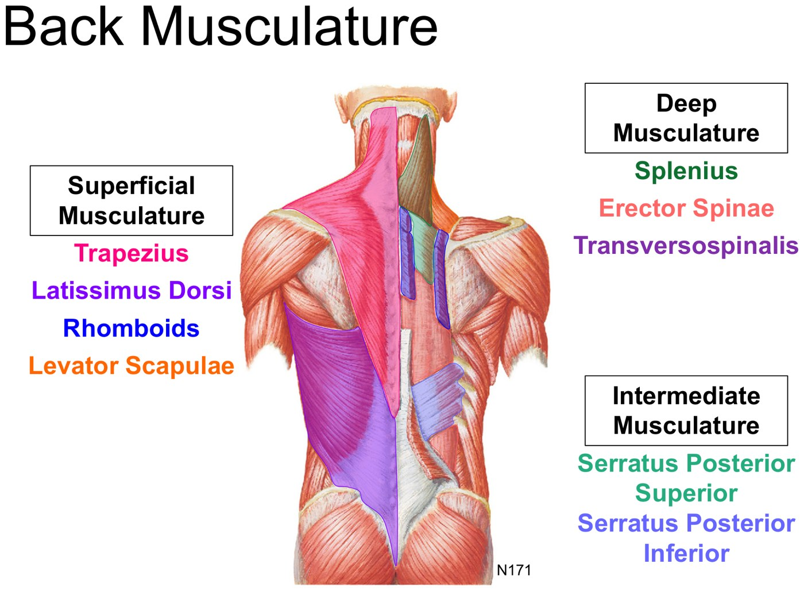
| Superficial muscle | Action | Nerve |
|---|---|---|
| Trapezius: a diamond shape covering the upper back, from the skull and the cervical and thoracic spinous processes to the point of the shoulder | Elevates, depresses and retracts the scapula; rotates the glenoid superiorly | Spinal accessory (CN XI): need to know. C3–C4 carry its pain and proprioception (the familiar trapezius ache). |
| Latissimus dorsi: large, flat and fan-shaped, from the thoracolumbar fascia, iliac crest, lower ribs and spines; wraps forward to the intertubercular groove of the humerus | Extends, adducts and medially rotates the humerus | Thoracodorsal (nice-to-know) |
| Rhomboids (major and minor, often fused): deep to trapezius, from the upper thoracic spines to the medial border of the scapula | Retract the scapula, rotate to depress the glenoid, hold the scapula to the chest wall | Dorsal scapular (nice-to-know) |
| Levator scapulae: a thin strap from the upper cervical transverse processes to the superior medial border of the scapula | Elevates the scapula, rotates to depress the glenoid | Dorsal scapular plus C3–C4 |
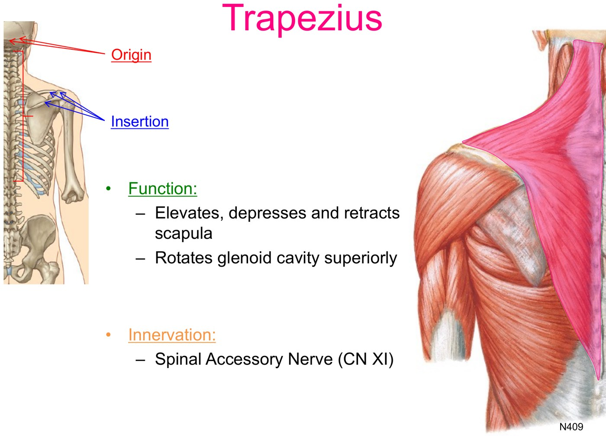
Trapezius, CN XI. Slide from the deck.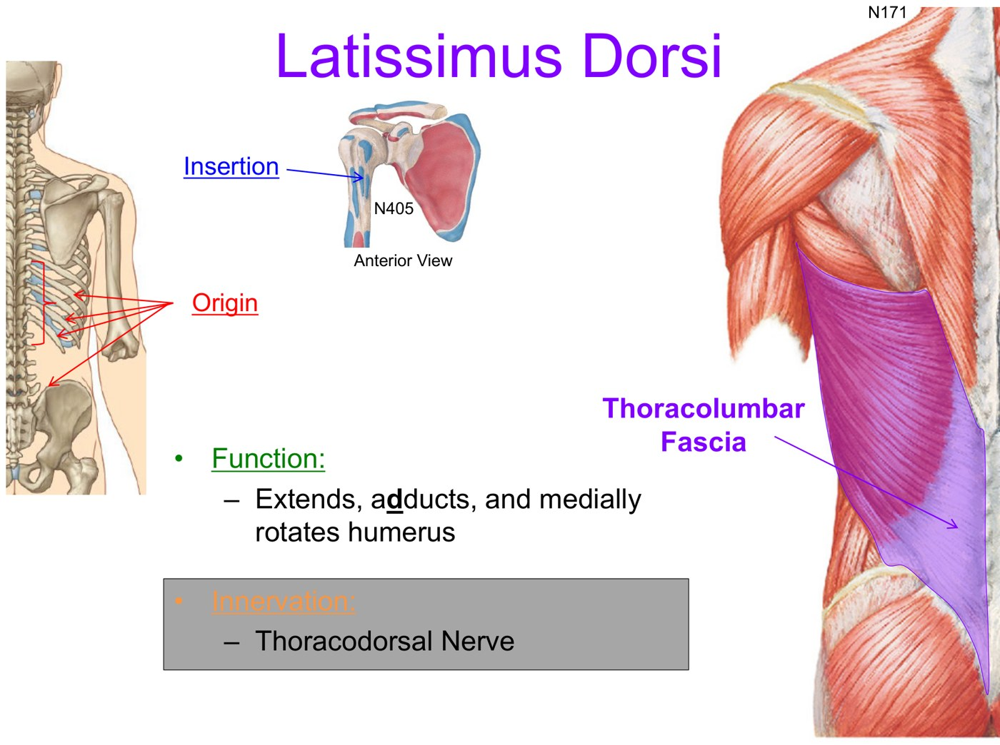
Latissimus dorsi. The greyed box (thoracodorsal nerve) is nice-to-know. Slide from the deck.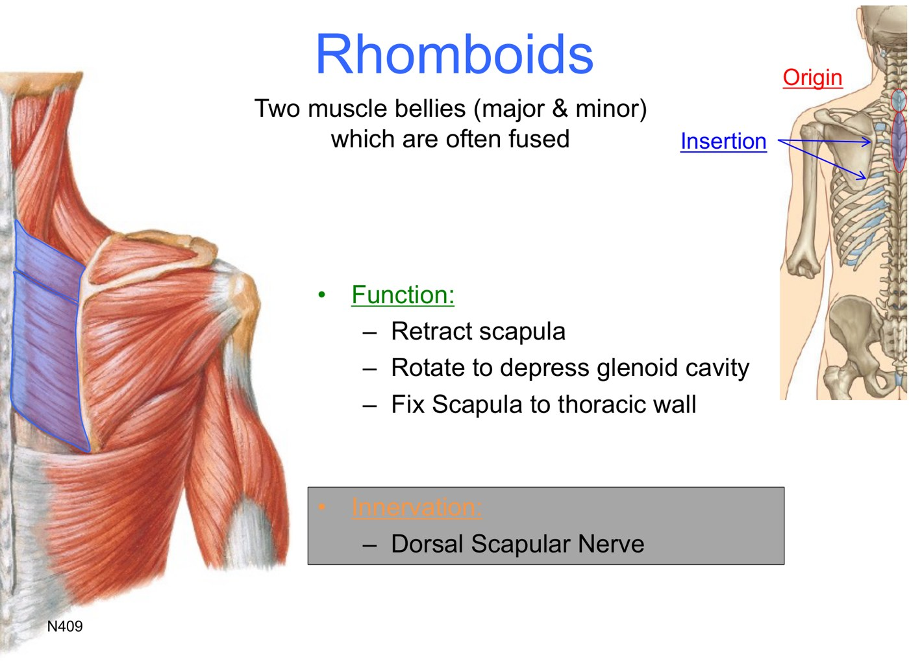
Rhomboids. Slide from the deck.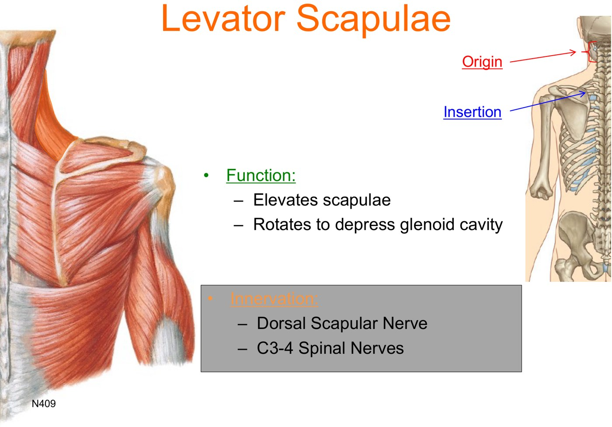
Levator scapulae. Slide from the deck.| Deep muscle group | Action | Nerve |
|---|---|---|
| Erector spinae: Iliocostalis (lateral, to the ribs), Longissimus (intermediate), Spinalis (medial, to the spinous processes), all from a broad tendon off the sacrum, iliac crests and lumbar spines. “I Like Standing”, lateral to medial. You won't be asked to identify the three individually. | Bilateral: extend the column and head, and eccentrically control trunk flexion so you don't fall forward (think deadlifts). Unilateral: lateral flexion. Part of the core. | Dorsal rami: need to know. These deep muscles are the only motor targets of the dorsal rami. |
| Splenius (capitis to the skull, cervicis to the cervical vertebrae): from the ligamentum nuchae and upper cervical spines, angling up and out | Bilateral: extend the head and neck. Unilateral: laterally flex and rotate the head and neck, with sternocleidomastoid. | |
| Transversospinalis: transverse process → spinous process at every level. Semispinalis spans 4–6 segments, multifidus 2–4, rotatores 1–2. | Contralateral rotation, segment-by-segment stabilization, proprioception. They may contribute to mechanical back pain. |
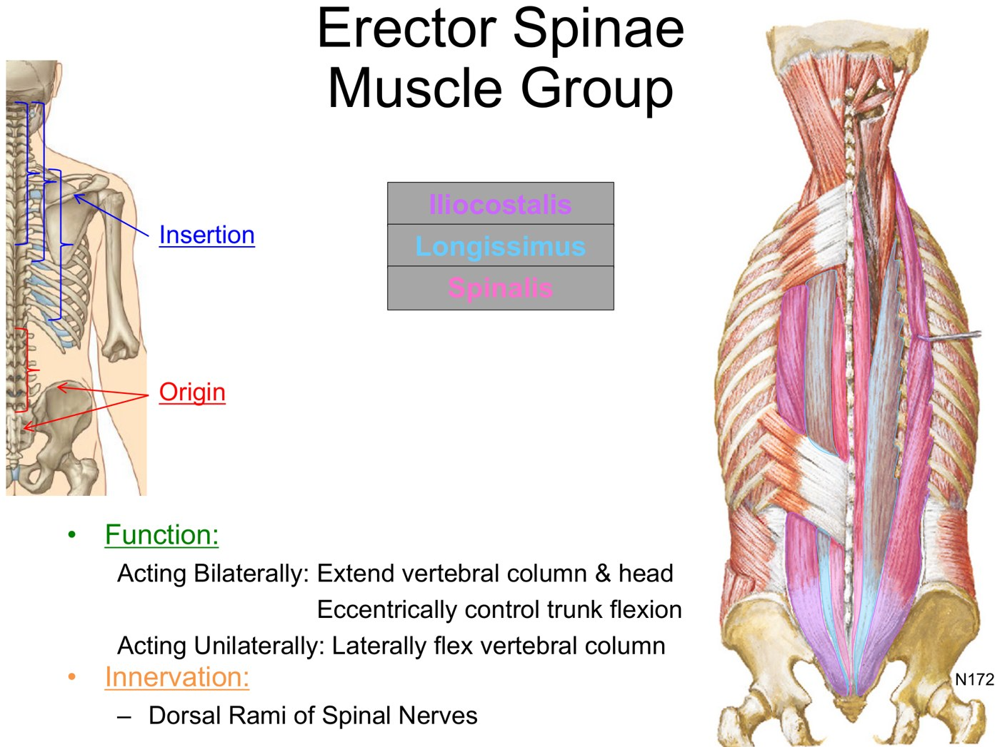
Erector spinae. The three names are greyed out: know the group. Slide from the deck.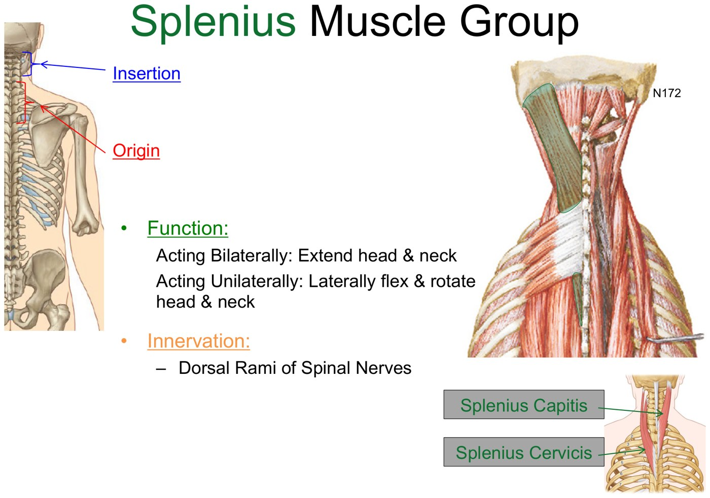
Splenius. Slide from the deck.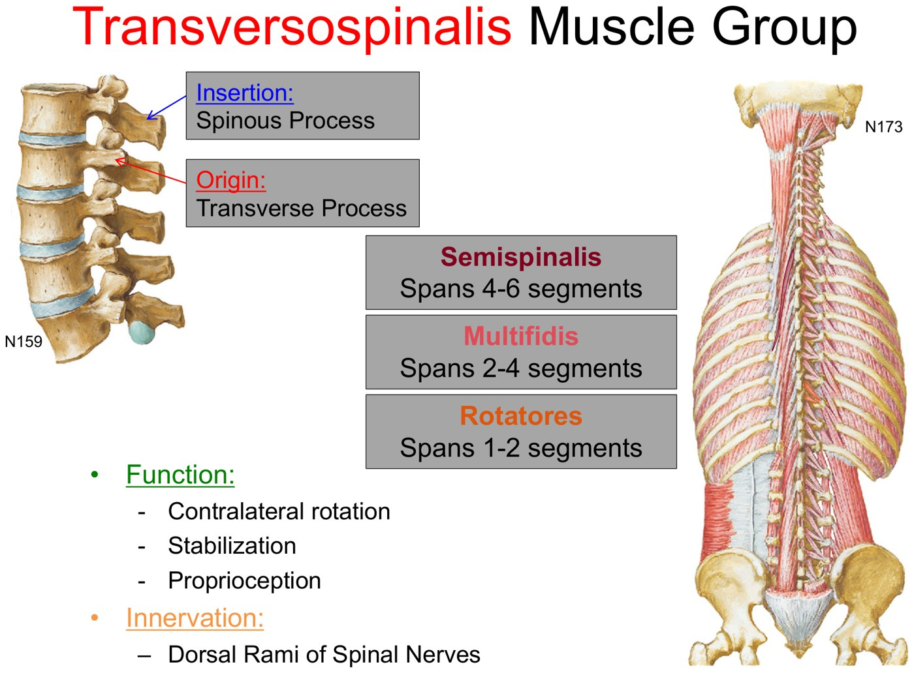
Transversospinalis: short, medium and long fibres at every level. Slide from the deck.Not to supply it: latissimus is a superficial muscle, supplied by ventral rami. The dorsal rami pass through the superficial muscles to reach the skin of the back. A dorsal ramus does only two things: motor to the deep back muscles, and sensation from the skin over the back and neck. On the module's dissection photo the labels are A trapezius, B latissimus dorsi, C rhomboids, D erector spinae (iliocostalis), E dorsal rami. The photo itself is left out.
Muscle Problems
| Problem | What it is |
|---|---|
| Acute strain or spasm | — |
| Repetitive strain injury | WSIB definition: from repetitive tasks, forceful exertion, vibration, mechanical compression, or sustained or awkward positions |
| Myofascial pain syndrome | Trigger points: “hyperirritable areas of tissue that are tender when compressed and can give rise to referred pain” |
There is no test for it. Investigate only to rule something else out. Management is conservative: rule out red flags, then educate and reassure. Movement may hurt, but it won't cause damage, and patients can become fearful of moving. Explain the excellent prognosis. Use relative rest, ice or heat, topicals, a short course of oral NSAIDs if needed, and physio to strengthen postural support. Tight and weak muscles are often asymmetric: for example, strengthen the hip extensors and abdominals and stretch the hip flexors to support the normal lumbar lordosis.
Whiplash-Associated Disorder
| Question | Answer |
|---|---|
| What | Neck symptoms after an acceleration–deceleration injury, e.g. an MVC |
| Tissue | Most often muscle (strains or partial tears of the paraspinals). Less often, in decreasing order: facets > ALL > bone (fracture) > cord (SCI). |
| Prognosis | Most improve with conservative care. < 5% have severe symptoms at 2 years. |
| Image? | If there's more than subjective pain, stiffness and tenderness, with a real loss of range: x-ray if you suspect a fracture, ± MRI if there's any neurologic abnormality |
| Straightforward WAD | Keep moving and avoid C-collars; heat and ice; acetaminophen or NSAIDs (oral or topical); “modest” physio, because aggressive early programs may make it worse |
Who to Image
Mechanical pain comes from irritated structures, but imaging is often normal, and abnormal imaging is common in people with no pain at all. In one review of MRIs in adults without back pain, disc degeneration was reported in 0–76% (Endean et al. 2011). Degeneration comes with aging, so a finding may be contributing, or may be incidental. Patients often want a scan, and the scan often won't answer the question.
| Situation | Imaging (Canadian Association of Radiologists) |
|---|---|
| No red flags, mechanical, < 6 weeks | None. |
| Red flags: suspected cancer, infection, cauda equina, severe or progressive neurologic deficit, suspected compression fracture | MRI is the best modality. Image urgently if you suspect an epidural abscess or hematoma, which can present with acute pain before any neurologic signs. |
| Suspected uncomplicated disc herniation or stenosis | Only after an unsuccessful 4–6 week trial of conservative care |
| CT | Only when you'd order an MRI but can't (contraindication, availability), or for trauma and fine bony detail |
| X-ray | For red-flag conditions (fracture, malignancy), or as a quick first step if symptoms persist past 6 weeks despite good conservative care. It's fast and catches gross malalignment or an old fracture. |
![Slide titled So How Should I Decide Who to Image, quoting the Canadian Association of Radiologists referral guideline C06 Lower back pain: MRI, indicated in special circumstances; imaging only indicated with red flags (suspected cancer, suspected infection, cauda equina syndrome, severe or progressive neurologic deficit, suspected compression fracture); urgent imaging if concern for epidural abscess or hematoma; for suspected uncomplicated herniated disc or spinal stenosis, imaging only after an unsuccessful 4 to 6 week trial of conservative management.](../../../../assets/images/week-7/mechanical-back-neck-pain/car-imaging.jpg)
Knowledge check: which of these gets a CT?
A 35-year-old after an MVC this morning, normal C-spine x-rays, still with severe neck pain despite analgesia → CT, to look for an occult fracture.
The others: a 50-year-old with 6 weeks of buttock-radiating mechanical pain and minimal benefit from weekly PT hasn't really done adequate PT, which should be done at home. If she has, the test is an MRI for stenosis, or an x-ray first. A 27-year-old with morning stiffness that eases with activity and lumbar pain worse overnight is inflammatory, so MRI. A 69-year-old with 3 months of leg pain to the toes, weakness and a numb patch on the lateral leg despite PT is root compression, so MRI (CT only if MRI is contraindicated).
The Bridge to Non-Mechanical Pain
Degenerative change in the disc and/or the facets.
Subluxation, joint enlargement (osteophytes, ligament hypertrophy), disc bulge or herniation, and degenerative spondylolisthesis, where one vertebra slips, usually forward, on the next.
Lateral stenosis is encroachment on the root in the neural foramen. Central canal stenosis narrows the canal where the roots or the cord run. Both are now non-mechanical problems (7.3).
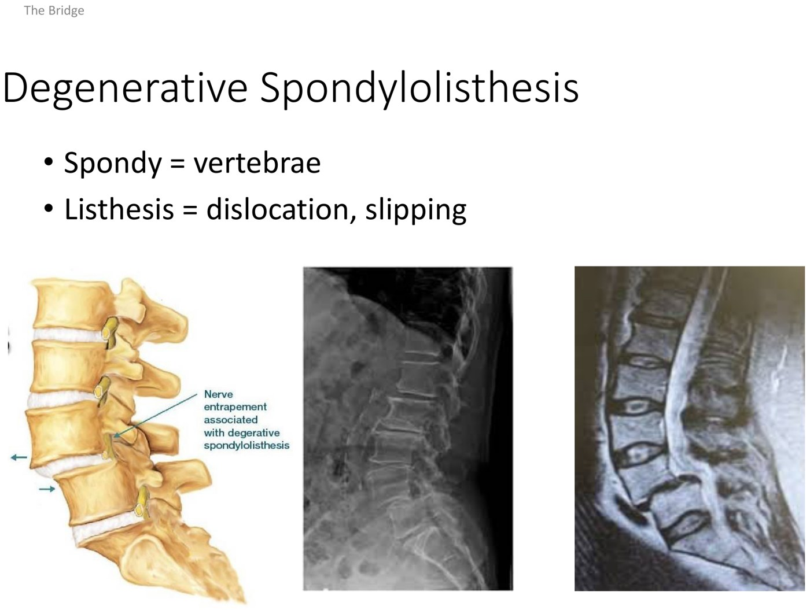
Dr. Cassidy stresses that degeneration is only one route to this. Anything space-occupying in the canal or foramina, such as an infection or a tumour, compresses nerves the same way.
Built from Dr. Caitlin Cassidy and Dr. Charys Martin's “Clinical Approach to Mechanical Back & Neck Pain” module: seven recordings, its knowledge checks, the 64-slide “detailed” deck (muscle slides taken from the standard 63-slide deck, so the greyed-out nice-to-knows stay visible), and Dr. Martin's anatomy mini-text. The abnormal-curve photographs (one shows a patient's face) and the cadaver dissection photo are left out and described in text. Discrepancies flagged: the herniation slide says discs move away from the “ligamentum flavum”, but the recording's PLL explanation is anatomically correct and is followed. The recording calls the lumbar transverse processes “short and wide” and the mini-text “long and slender”; the mini-text is followed. The mini-text lists cervical movement as flexion and extension only, while the recording adds lateral flexion and rotation; the recording is followed. Caption corrections: OLDCARS (“Old Cars”), facet (“set”, “four set”), zygapophysial (“zakopane steel”, “psychopathic”), nucleus pulposus (“polyposis”), pedicles (“pentacles”), anulus fibrosus (“ambulance”), bifid (“Byford”), lordosis (“La Dosis”), ligamentum flavum (“flavor”), ligamentum nuchae (“new gai”), spondylosis (“spondylitis”, which is a different, inflammatory word), spondylolisthesis (“spondylitis thesis”), osteophyte (“osteo fight”), iliocostalis (“Elliot Costello”), splenius (“spleen”), multifidus (“multifarious”) and NSAIDs (“incense”).